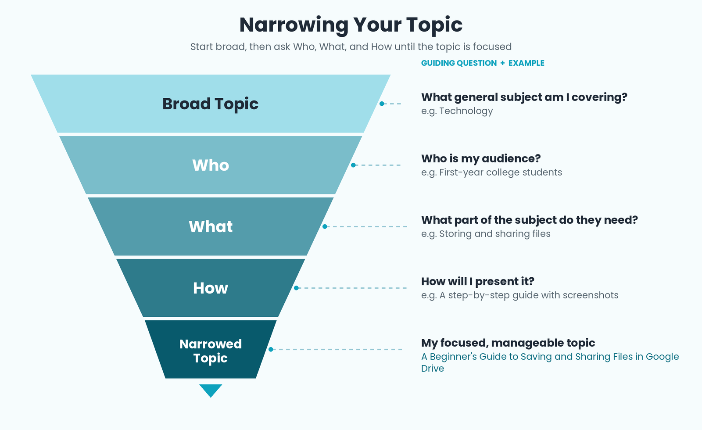

Introduction
Before a technical writer can produce a clear document, they must first limit the subject and outline it. Outlining is the process of narrowing a broad topic to a specific focus and then organizing the main ideas and supporting details into a logical framework.
Part 1: Limiting the Subject
Limiting the subject means narrowing down a broad topic to focus on a specific aspect, making the content concise, relevant, and manageable for the intended audience.
Key Definition
Limiting the subject is the process of narrowing a broad topic to focus on a specific aspect, ensuring clarity and preventing information overload.
Steps in Limiting the Subject
- Identifying core topics
- Setting boundaries
- Eliminating unnecessary information
- Focusing on essential elements
- Maintaining relevance
The Three Restrictions: Who, What, How
- Who — Who is the specific audience or subject?
- What — What specific aspect will be discussed?
- How — How will the information be presented or applied?
Example — Narrowing "Remote Work"
Broad topic: Remote Work
Who: Freelance web developers
What: Productivity challenges
How: Using time-blocking techniques
Narrowed topic: "Time-Blocking Strategies for Productivity Among Freelance Web Developers Working Remotely"

Part 2: Outlining
Outlining is the process of creating a structured framework to organize main ideas and supporting details, ensuring the content is logical, focused, and easy to follow.
Key Definition
An outline is a formal system used to think about and organize your paper. It uses Roman and Arabic numerals along with capital and small letters of the alphabet.
Why Outlining Matters
- Ensures logical flow of ideas
- Prevents missing important points
- Reveals weak or unsupported arguments
- Saves time during drafting
- Keeps the writer focused on the main purpose
Outline Formatting Symbols
| Level | Symbol | Example |
|---|---|---|
| 1 | Roman Numerals | I. II. III. |
| 2 | Capital Letters | A. B. C. |
| 3 | Arabic Numbers | 1. 2. 3. |
| 4 | Lowercase Letters | a. b. c. |
| 5 | Parenthetical Arabic Numbers | (1) (2) (3) |
| 6 | Parenthetical Lowercase Letters | (a) (b) (c) |
Alternative: The Decimal Outline Hierarchy
1.0 MAIN HEADING (Broadest Idea)
1.1 Sub-heading
1.1.1 Detail
1.2 Sub-heading
2.0 MAIN HEADING
Two Kinds of Outline
1. Topic Outline
Consists of short phrases and is particularly useful when dealing with a number of different issues that could be arranged in categories.
Example — Topic Outline
I. Benefits of Differentiated Instruction
A. Increased academic performance
B. Decrease in behavioral issues
II. Strategies for Implementation
A. Differentiating the Content
B. Differentiating the Process
C. Differentiating the Product
2. Sentence Outline
Done in full sentences and is normally used when the paper focuses on complex details.
Steps to Write an Outline
- Identify the main topic or purpose.
- Determine the main ideas or arguments.
- Put the ideas in order.
- Add supporting details.
- Review and revise.
Complete Sample Outline
Topic: Benefits and Strategies of Differentiated Instruction
I. Benefits of Differentiated Instruction
A. Increased academic performance and test scores
B. A decrease in behavioral issues
II. Strategies for Implementing Differentiated Instruction
A. Differentiating the Content
1. Varying the complexity of reading materials
B. Differentiating the Process
1. Providing flexible deadlines
2. Using text-to-speech tools
C. Differentiating the Product
1. Allowing students to choose between essay or video
Self-Check
1. What is the difference between a topic outline and a sentence outline?
A topic outline uses short phrases; a sentence outline uses complete sentences.
2. What are the three restrictions used to narrow a topic?
Who, What, How.
3. What symbol is used at the first level of a formal outline?
Roman numerals (I, II, III).
References
- Mitante, E. J. L. (n.d.). Why People Write [Lecture slides]. City College of Calapan.
- Purdue Online Writing Lab. (n.d.). Types of outlines and samples. Purdue University.
- Indiana University Bloomington. (n.d.). Developing an outline.